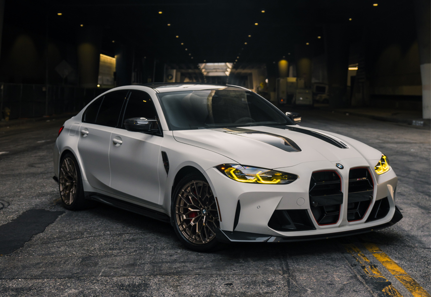
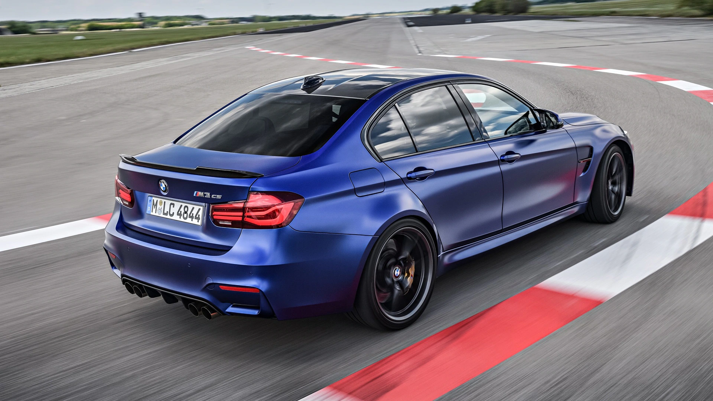

My Take on BMW
BMW has built a strong reputation for combining performance, advanced technology, luxury, and distinctive design. From its classic models to its modern high-performance vehicles, the brand has continued to evolve while maintaining its focus on the driving experience. This website explores the aspects of BMW that interest me the most, especially the BMW M division, its impressive performance, and the evolution of its design across different generations. I will take a closer look at some of my favorite M models, compare older and newer BMW designs, and share my personal opinions on what makes certain cars stand out. Finally, I will put together my own dream BMW garage, featuring the cars I would choose as my daily driver, weekend car, and ultimate dream collectible.

Why BMW?
BMW has always been one of the car brands that stands out to me because it combines performance with everyday usability. I like cars that are fast and exciting to drive, but I also appreciate comfort, technology, and good interior design. BMW manages to bring many of those qualities together in the same car.
I am especially interested in BMW's M division because M cars take normal BMW models and turn them into much more performance-focused machines. They usually have more powerful engines, more aggressive styling, upgraded suspension, and other changes that make them feel more special than the standard versions. At the same time, many of them can still be used as normal daily drivers, which is one of the things I like most about them.
BMW's design is another reason I find the brand interesting. Some generations have very clean and timeless designs, while newer BMWs have become much more aggressive and controversial. Comparing those different generations is part of what makes following BMW interesting to me.